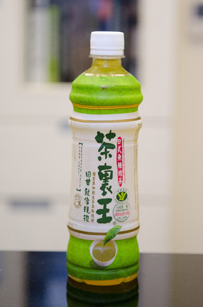

DRINK
CAKE
STORE CAPITAL
ABOUT WUN-YI
CONTACT US

茶裏王‧‧‧‧‧‧‧‧‧‧‧‧NT$100
介紹 :
茶裏王 回甘 就像現泡
原料 :
四季春茶葉 小蘇打 維生素C
芒果冰沙‧‧‧‧‧‧‧‧‧‧‧NT$120
介紹 :
雲林特產 限定在4月~6月特有消暑飲料
原料 :
雲林縣愛文芒果 冰箱 冰塊
卡布奇諾‧‧‧‧‧‧‧‧‧‧‧NT$110
介紹 :
咖啡所佔的比例越來越多時，杯中的顏色，會轉變為以深褐色為主，再搭配一絲絲白色的牛奶
原料 :
三分之一的濃縮咖啡、三分之一的熱牛奶與三分之一的奶泡
冰抹茶那堤‧‧‧‧‧‧‧‧‧‧NT$160
介紹 :
使用日本優質抹茶粉及鮮奶調製，馥郁茶香及滑順口感
原料 :
無糖抹茶粉、牛奶.、冰水.、果糖
冰美式咖啡‧‧‧‧‧‧‧‧‧‧NT$120
介紹 :
冰美式咖啡清涼爽口的微甜口感中，帶著淡淡的煙燻苦味，下喉後讓冰美式咖啡顯得清爽暢快，回味無窮。
原料 :
熱水、espresso
冰摩卡‧‧‧‧‧‧‧‧‧‧‧‧NT$130
介紹 :
由濃縮咖啡、摩卡醬及優質鮮奶調製，覆上輕盈柔細的鮮奶油，帶來香濃的巧克力及咖啡風味。
原料 :
巧克力醬、熱牛奶泡、鮮奶油擠花、淋巧克力醬、巧克力、巧克力碎片
那堤‧‧‧‧‧‧‧‧‧‧‧‧‧NT$90
介紹 :
以較短秒數醇厚的Ristretto Shot製作，口感濃郁、蘊含濃縮咖啡的甜味，搭配豐厚細緻的奶泡，重現經典義式咖啡的美好風味。
原料 :
牛奶 蜂蜜 土耳其咖啡
玫瑰蜜香茶那堤‧‧‧‧‧‧‧‧NT$150
介紹 :
使用玫瑰蜜香紅茶與現蒸牛奶，加上濃郁奶泡，細緻茶香好是宜人。
原料 :
玫瑰蜜香紅茶、牛奶 奶泡
珍珠奶茶‧‧‧‧‧‧‧‧‧‧‧NT$160
介紹 :
在台灣，珍珠奶茶是具有相當的自主性的，而珍珠奶茶店通常也以複合式經營，不單只提供紅茶、綠茶、奶茶、咖啡等飲料，還有各式各樣能代表各店特色的「特調飲料」，而一些常客也會創造出自己專屬的口味。
原料 :
珍珠 奶茶 咖啡因
紅茶拿鐵‧‧‧‧‧‧‧‧‧‧‧NT$130
介紹 :
使用阿薩姆紅茶與現蒸鮮奶完美融合，覆上濃郁奶泡，帶來平衡甜美的絕妙口感。
原料 :
<阿薩姆紅茶 鮮奶 奶泡/h3>
席然紅茶‧‧‧‧‧‧‧‧‧‧‧NT$140
介紹 :
錫蘭紅茶產於斯里蘭卡，又被稱為「西冷紅茶」、「惜蘭紅茶」，該名稱源於錫蘭的英文Ceylon的發音音譯而來。
原料 :
斯理蘭卡特有紅茶茶葉
焦糖瑪奇朵‧‧‧‧‧‧‧‧‧‧NT$140
介紹 :
以一半每日精選咖啡和一半牛奶調製而成順口平衡的咖啡風味，咖啡風味隨著每日精選咖啡豆的不同而產生精彩的風味變化，但卻都有著順口平衡的好風味。
原料 :
焦糖糖漿、Espresso、牛奶、奶泡、焦糖醬。